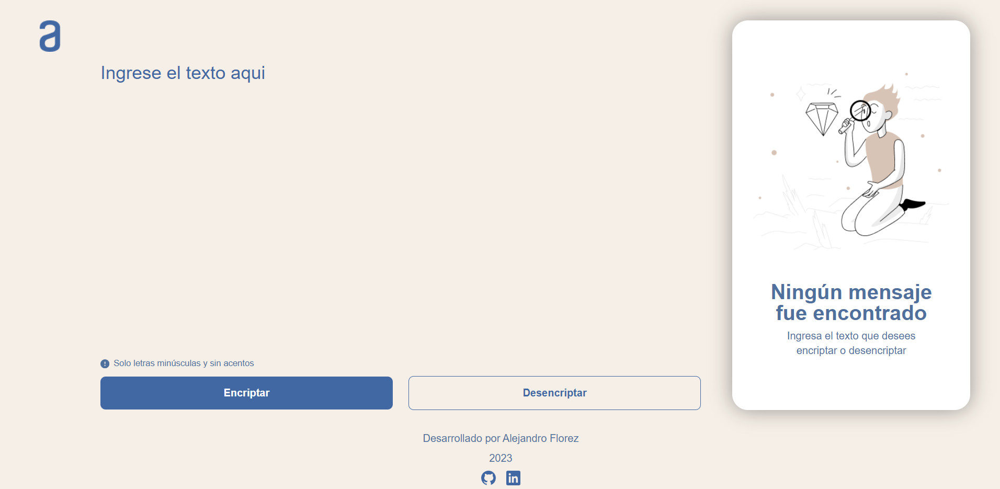
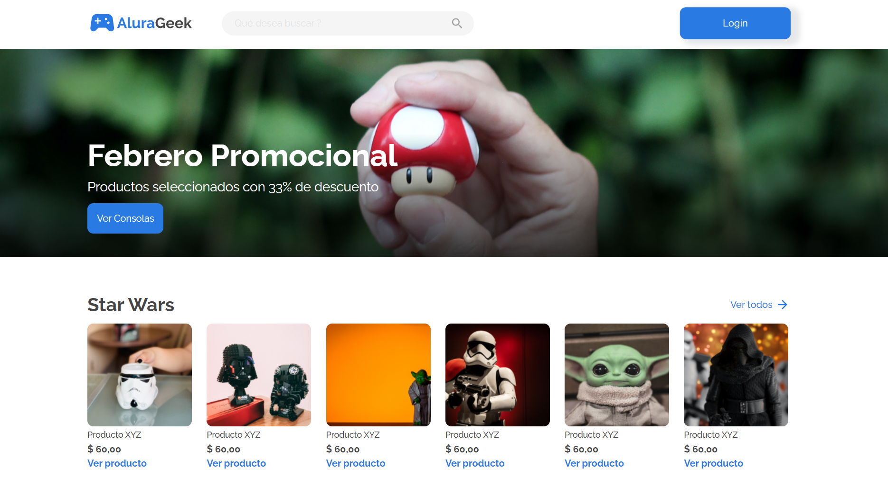
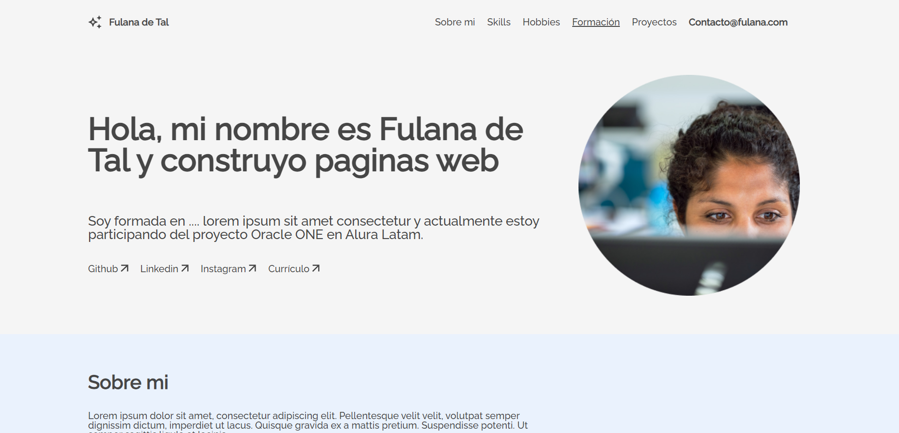

PORTAFOLIO
Cada proyecto es una pieza única de desarrollo 👨💻

Encriptador de texto 🕵🏻
Aplicación para cifrar y descifrar texto. En esta aplicación, solo se aceptan letras minúsculas y se excluyen acentos y caracteres especiales.


AluraGeek E-commerce 🛒
Este proyecto consiste en un e-commerce que utiliza tecnologías HTML, CSS y JavaScript para estructurar, estilizar y hacerlo dinámico.

Challenge Portafolio Web 💻📲
Diseño propuesto por el equipo de AluraLatam + Oracle en el que su principal objetivo es crear un portafolio responsivo en diferentes dispostivos.